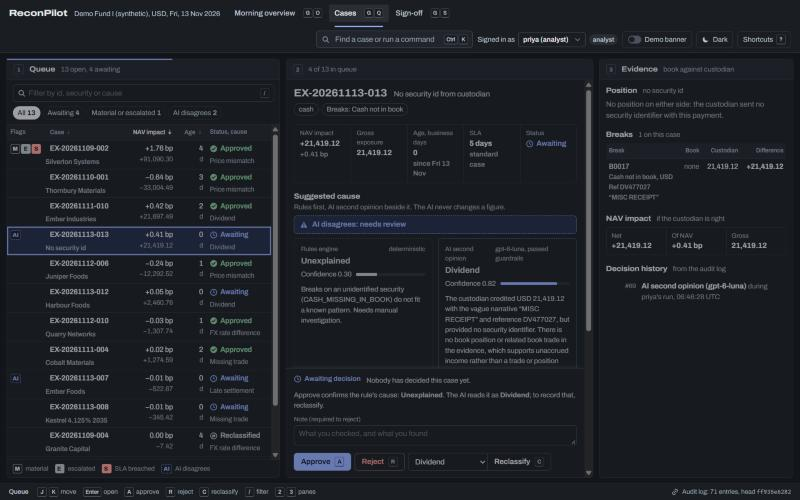
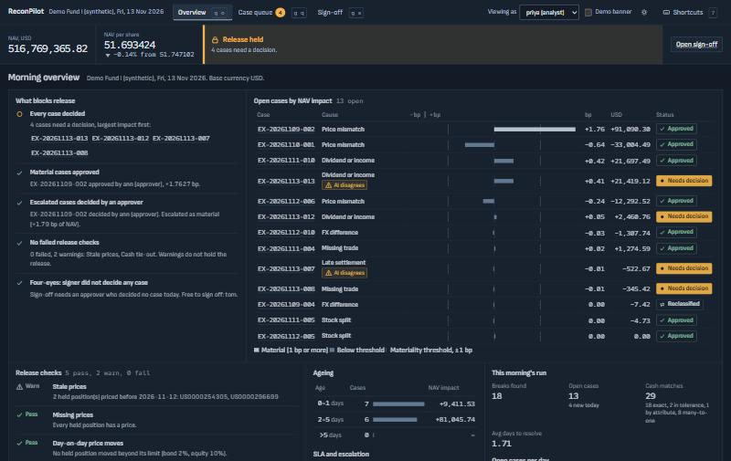
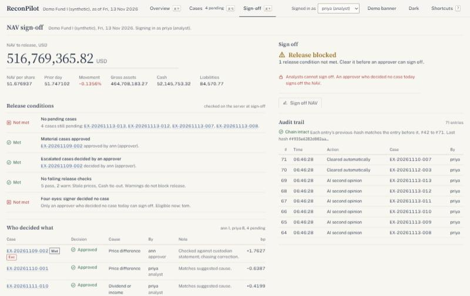
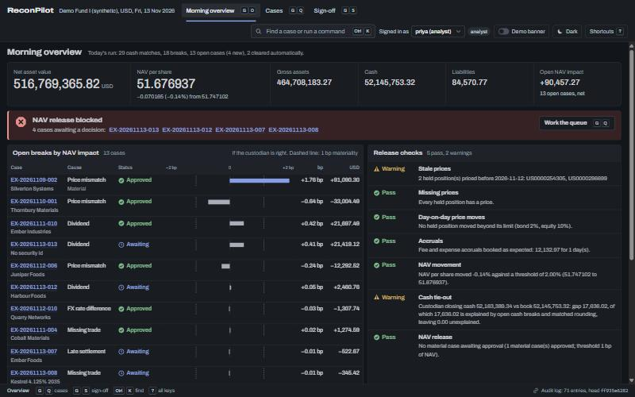
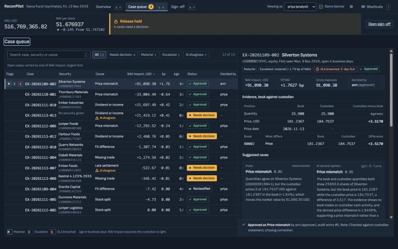
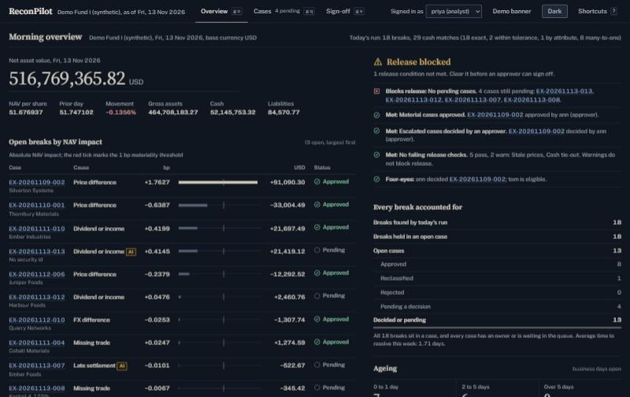

A reconciliation workbench an operations team would recognise as theirs
ReconPilot's engine already finds, explains and ages breaks. This design puts it behind a web application: a public demo that impresses in two minutes, and a tool that genuinely works with real files.
The aim
Two things matter, in this order.
1. Impress in two minutes
A recruiter opens a link, clicks Try as analyst, and works a realistic morning: breaks ranked by NAV impact, AI explanations with drafted custodian queries, four-eyes sign-off, MI and a verifiable audit trail. Nothing to install.
2. Features ops teams actually use
NAV impact and materiality, ageing and escalation, SLAs, automatic clearing, maker-checker sign-off, a tamper-evident audit log, MI with export. And it must really work with real files, because it actually works is part of what impresses.
Who uses it
Uploads the day's files, runs the reconciliation, works the case queue, approves, rejects or reclassifies with notes, copies AI-drafted custodian queries.
Everything an analyst can do, plus decides material and escalated cases and signs off the NAV. Four-eyes: never on a day they decided cases.
Read-only: overview, cases, MI and the audit log. Typically a manager. An admin flag on any user unlocks user and fund administration.
How it fits together no Docker; one command starts everything
The existing engine stays the core and is called as a library. PostgreSQL holds every case, decision and audit entry. In development an embedded PostgreSQL starts from Python, so nothing needs installing system-wide.
A business day
- UploadThe day's CSV files, stored with their hashes.
- ValidateHeaders, types, dates and ids checked per row before anything runs.
- RunThe engine matches, triages, values the fund and rolls cases forward.
- ReviewAnalysts decide; approvers take material and escalated cases.
- Sign offA second approver releases the NAV. Only then can tomorrow run.
Controls all enforced on the server
One release status, everywhere
✕ Blocked or ✓ Ready, with the reasons listed: pending decisions, material cases awaiting approval, escalated cases awaiting an approver, failed checks, four-eyes. No screen can show "blocked" beside a passing check again.
Maker-checker
- Reject always needs a note.
- Escalated cases need an approver's decision.
- Whoever signs off decided none of the day's cases.
- Sign-off locks the day. Unlocking takes an admin's request and a different approver's confirmation.
- A stale decision is refused, never silently overwritten.
A tamper-evident audit trail
The engine's SHA-256 hash chain, stored in PostgreSQL. The application's database role can only add entries; a trigger refuses any edit or deletion. "Verify chain" re-checks every hash.
NAV impact, honestly shown
Gross and net impact, never net alone, so breaks in opposite directions cannot hide each other. Materiality is set per fund (default 1 basis point of NAV).
The AI suggests and drafts; a person decides
Every original AI feature carries into the web app: the second opinion beside the rules, the guardrails (strict schema, invented figures rejected, fall back to the rules on any error), investigation steps, the drafted custodian query, the "AI disagrees: needs review" flag, every call in the audit log, and the response cache.
| Cause named correctly | Rules | AI | Verdict |
|---|---|---|---|
| New breaks, on the day they appear | 41 / 44 | 44 / 44 | ✓ AI better |
| Breaks carried over from earlier days | 74 / 75 | 54 / 75 | ✕ Bug: missing evidence |
| Disagreements left unflagged | n/a | 20 | ✕ Bug: flag set too early |
Real money stays protected
In real use, AI is off for every fund until an admin switches it on, after a warning that evidence leaves the building; the switch is audited. A bank can point it at its own Azure OpenAI or a self-hosted model instead of a public API. The public demo answers from a pre-filled cache, so it needs no key and costs nothing.
Screens and look
Three directions were mocked up with real engine output, then checked by an independent critic for contrast, accessibility, keyboard use and data fidelity. All three passed. The build combines the best of each. Click any image to open the working mockup.

✓ Used for case work

✓ Used for the NAV strip

✓ Used for overview and sign-off



Six core screens
| Screen | What it shows |
|---|---|
| Morning overview | NAV strip, release status with reasons, every break accounted for, breaks by impact (gross and net), ageing, SLA breaches, cleared today, trend |
| Upload and run | Drop zone, validation errors before the run, progress, run history |
| Case workbench | Filters and search, book versus custodian evidence, rules beside AI, steps, draft query, history, decision bar |
| Sign-off | Release conditions, who decided what, audit trail, blocked states in plain words |
| MI | Breaks by cause and age, time to resolve, trend, top five, SLA breaches; export to Excel and CSV |
| Audit log | Filter by fund, date, person, action or case; verify the chain; export |
Feel: calm, dense and precise; light and dark themes; one vocabulary for causes and statuses; keyboard shortcuts (j/k, a, r, c, /, g then a screen letter, Ctrl+K, ?); motion of 150 to 200 ms that switches off for anyone who prefers reduced motion; WCAG 2.2 AA throughout.
Public demo
A private fund for every visitor
"Try the demo" generates a fresh fund from a fixed seed: a hard-mode working week, earlier days already signed off, today waiting. Four one-click users (an analyst, two approvers to show four-eyes, a viewer). Nothing is shared between visitors.
Safe and free to host
- Separate instance and database; uploads disabled on the server.
- Demo and real databases refuse to be mixed.
- AI from a pre-filled cache: no key, no cost.
- Visitor funds expire after 24 hours; creation is rate-limited.
- A permanent banner says the data is synthetic.
Build phases each ends with tests passing and a commit
- 1Backend sliceAI fixes proven
One command to start, embedded database, sign-in and roles, audit chain, upload, validation, runs, cases, decisions, release status, sign-off, day order, the equivalence test, the AI fixes.
- 2Front-end sliceA full day in the browser
Sign-in, NAV strip, overview, case workbench, decision bar, sign-off, in the combined look.
- 3The rest of operations
Several funds, upload screen, MI with exports, audit viewer, multi-day history and trend.
- 4Public demoShareable link
Visitor funds, one-click users, cached AI, expiry, banner, single-host serving.
- 5Polish
Command palette, motion, all shortcuts, accessibility pass, admin pages, AI switch and private endpoint, unlocking, security hardening, a year of history.
- 6Independent code reviewReady to show
A separate reviewer goes through everything; findings fixed.
Future work, noted in the README only: single sign-on, a production hosting kit, regulated-grade deployment, live custodian feeds, AI reading of corporate-action notices.
Decisions
| Question | Decision | By |
|---|---|---|
| Engine and database | Engine as a library; PostgreSQL is the system of record | Recommended |
| Sign-in | Built-in accounts first, single sign-on later | You |
| Day order | A day is signed off before the next one runs | You |
| AI on real data | Off per fund by default; private endpoint supported | You |
| Funds and demo | Several funds; a private demo fund per visitor | You |
| Unlocking a signed-off day | Admin requests, a different approver confirms | You |
| Docker | Dropped; everything runs natively | You |
| Scope | Simplified for a portfolio: working slice first, regulated deployment cut | You |
| Re-runs | Keep decisions that still apply; void the rest with an audit entry | My call |
| Stack | FastAPI, SQLAlchemy, Alembic; React, TypeScript, Vite, Radix UI | My call |
Approve this design to start the build plan.
Reply in the chat. The full written specification is in docs/superpowers/specs/2026-11-13-reconpilot-web-app-design.md.